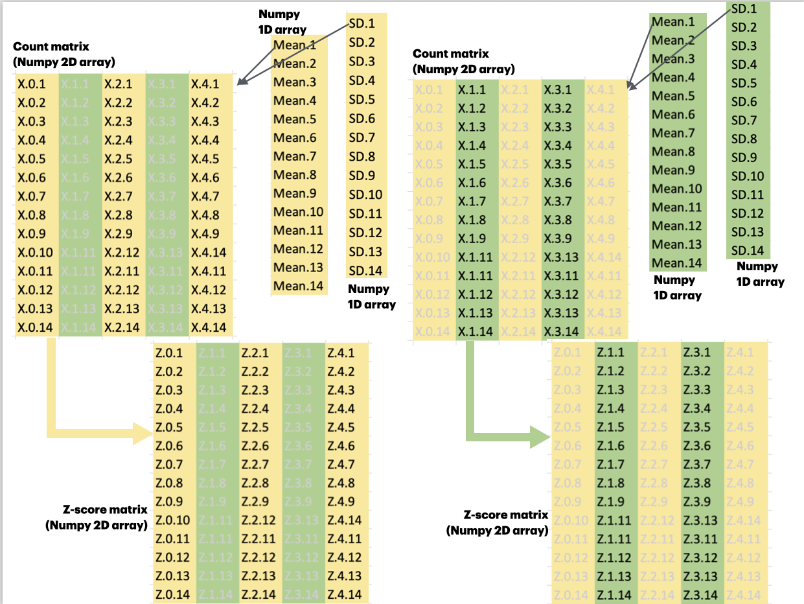
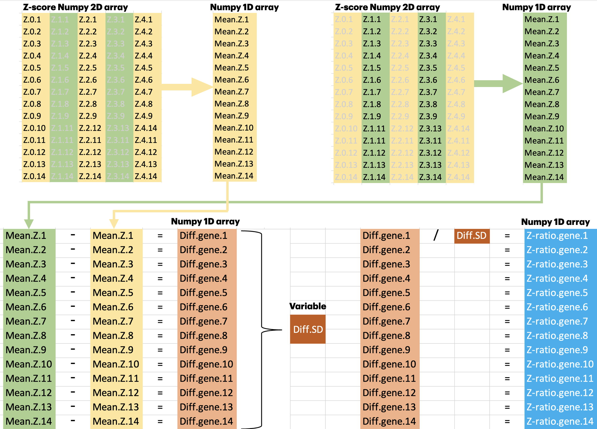

Hands-on: RNA Expression Analysis - alternative method
Objective
Examine differential expression of immune-related genes between patient groups previously classified as immunologically strong (‘istrong’) and immunologically weak (‘iweak’)
Apply an alternative analytical approach using Z-ratio methodology to complement standard differential expression tools like DESeq
Ranks immune-related genes based on their relative expression differences between the patient groups
Dataset description
test_data/Sample_group_info.csvPatients were divided into
istrong(immunity-strong) andiweak(immunity-weak) groups based on their Immunity scoreThe Immunity score was calculated by averaging the gene expression values of the 17 identified immune-genes
test_data/count_matrix.csv: Gene expression raw counts
Steps
Data Loading and visualization
Load sample group information (
iweakvsistrong)Load gene expression count matrix
Examine array information
Sample Identification
Filter samples by group (
iweak/istrong)Match count matrix columns with sample IDs
Data Preprocessing
Convert count matrix to numeric values
Apply log2 transformation: log2(counts + 1)
Statistical Analysis
Calculate mean and std for each gene within each group
Compute Z-scores within each sample group
Calculate Z-score differences between groups
Compute standard deviation of all differences
Ranking Genes
Calculate Z-ratio: difference / std_difference
Rank genes by Z-ratio (highest to lowest)
Workflow:
flowchart TD
A[Load Sample Group Info] --> B{Filter by Group}
B -->|iweak| C[Identify iweak samples]
B -->|istrong| D[Identify istrong samples]
E[Load Count Matrix] --> F[Match columns with samples]
F --> G[Convert to numeric]
G --> H[Log2 transformation]
C --> F
D --> F
H --> I1[Calculate iweak mean & std]
H --> I2[Calculate istrong mean & std]
I1 --> J1[Compute Z-scores for iweak]
I2 --> J2[Compute Z-scores for istrong]
J1 --> K[Calculate Z-score difference]
J2 --> K
K --> L[Calculate standard deviation]
L --> M[Compute Z-ratio]
M --> N[Rank genes by Z-ratio]
classDef dataNode fill:#f9f9f9,stroke:#aaa,stroke-width:2px;
classDef processNode fill:#e1f5fe,stroke:#01579b,stroke-width:2px;
classDef resultNode fill:#e8f5e9,stroke:#2e7d32,stroke-width:2px;
class A,E dataNode;
class B,C,D,F,G,H,I1,I2,J1,J2,K,L,M processNode;
class N resultNode;
Step 1: Loading and inspecting data
import numpy as np
from urllib.request import urlopen
# Read the CSV file into a numpy array
## CSV file contains sample group information
sample_group_info_url= "https://coderefinery.github.io/intermediate-python-ml/_downloads/b458a48eed87eb03931a8ce6efcdd351/Sample_group_info.csv"
data = np.genfromtxt(urlopen(sample_group_info_url), delimiter=',', dtype='str')
# Print the numpy array information
def print_array_info(array):
# Get the shape of the array
shape = array.shape
# Get the number of dimensions of the array
ndim = array.ndim
# Get the data type of the array
dtype = array.dtype
# Get the number of elements in the array
size = array.size
print(f"Shape: {shape} \nNumber of dimensions: {ndim} \nData type: {dtype} \nSize: {size}")
print_array_info(data)
Shape: (303, 2)
Number of dimensions: 2
Data type: <U12
Size: 606
# Read the CSV file into a numpy array with string dtype
## CSV file contains RNA count matrix
count_matrix_url = "https://coderefinery.github.io/intermediate-python-ml/_downloads/ab7de98031b77441be14a9d7ba21466c/count_matrix.csv"
count_matrix = np.genfromtxt(urlopen(count_matrix_url), delimiter=',',
dtype='str')
print_array_info(count_matrix)
Shape: (81, 483)
Number of dimensions: 2
Data type: <U18
Size: 39123
# Remove sample names from the count matrix (cm) - Delete the first row
## Convert the cm to a float32 array
print(count_matrix[0:5, 0:5])
print("___")
cm = np.delete(count_matrix, 0, axis=0).astype("float32")
print(cm[0:5, 0:5])
[['SH_TS_BC_C1' 'SH_TS_BC_C11' 'SH_TS_BC_C15' 'SH_TS_BC_C3' 'SH_TS_BC01']
['25' '559' '231' '44' '23']
['173' '2475' '886' '320' '6']
['114' '8806' '2781' '537' '47']
['626' '7492' '2829' '564' '14']]
___
[[2.500e+01 5.590e+02 2.310e+02 4.400e+01 2.300e+01]
[1.730e+02 2.475e+03 8.860e+02 3.200e+02 6.000e+00]
[1.140e+02 8.806e+03 2.781e+03 5.370e+02 4.700e+01]
[6.260e+02 7.492e+03 2.829e+03 5.640e+02 1.400e+01]
[3.170e+02 5.949e+03 2.357e+03 2.750e+02 2.600e+01]]
Step 2: Sample Identification
Filter samples by group (iweak/istrong)
Match count matrix columns with sample IDs
# Print the first 5 rows and columns of the data
print(data[:5, :5])
[['SH_TS_BC111' 'iweak']
['SH_TS_BC112' 'iweak']
['SH_TS_BC113' 'iweak']
['SH_TS_BC119' 'istrong']
['SH_TS_BC133' 'iweak']]
# Access indices of the array where the second column is 'iweak'
iweak_index = np.where(data[:, 1] == 'iweak')
print(iweak_index)
print_array_info(iweak_index[0])
(array([ 0, 1, 2, 4, 5, 6, 7, 8, 9, 12, 14, 15, 16,
17, 18, 21, 24, 25, 27, 31, 33, 34, 35, 38, 39, 41,
43, 45, 47, 49, 50, 51, 53, 54, 55, 56, 59, 60, 61,
63, 64, 65, 67, 69, 71, 72, 73, 74, 75, 78, 80, 81,
84, 86, 92, 93, 94, 97, 102, 106, 108, 111, 112, 114, 122,
123, 126, 131, 132, 133, 139, 142, 145, 146, 148, 149, 150, 151,
160, 161, 163, 164, 166, 168, 170, 171, 173, 176, 177, 180, 186,
188, 192, 195, 196, 197, 200, 203, 206, 207, 212, 214, 215, 216,
217, 219, 223, 225, 226, 227, 228, 230, 235, 244, 248, 249, 252,
256, 258, 260, 262, 263, 265, 266, 269, 270, 271, 275, 276, 278,
279, 280, 282, 283, 285, 286, 287, 288, 289, 291, 292, 293, 294,
295, 296, 298, 299, 300, 302]),)
Shape: (149,)
Number of dimensions: 1
Data type: int64
Size: 149
# Access indices of the array where the second column is 'iweak'
iweak_index = np.where(data[:, 1] == 'iweak')[0]
print("Index\n", iweak_index[:5], "\nData\n", data[iweak_index][:5,])
print_array_info(iweak_index)
Index
[0 1 2 4 5]
Data
[['SH_TS_BC111' 'iweak']
['SH_TS_BC112' 'iweak']
['SH_TS_BC113' 'iweak']
['SH_TS_BC133' 'iweak']
['SH_TS_BC134' 'iweak']]
Shape: (149,)
Number of dimensions: 1
Data type: int64
Size: 149
# View the first column of the count matrix where the sample group is 'iweak'
print(count_matrix[0:5, 0:5])
[['SH_TS_BC_C1' 'SH_TS_BC_C11' 'SH_TS_BC_C15' 'SH_TS_BC_C3' 'SH_TS_BC01']
['25' '559' '231' '44' '23']
['173' '2475' '886' '320' '6']
['114' '8806' '2781' '537' '47']
['626' '7492' '2829' '564' '14']]
# Create a boolean mask to find if the columns in the count matrix where the sample group is 'iweak'
cm_iweak_mask = np.isin(count_matrix[0, :], data[iweak_index, 0])
print(cm_iweak_mask[:30])
[False False False False False False False False False False False False
False False False False False False False False False False False False
False True True True False False]
# Find the indices of the columns in the count matrix where the sample group is 'iweak'
cm_weak_cols = np.where(cm_iweak_mask)[0]
print(cm_weak_cols)
print_array_info(cm_weak_cols)
[ 25 26 27 36 37 38 40 41 42 46 48 49 51 52 53 56 64 65
67 71 73 74 75 79 80 83 85 88 91 93 94 95 97 98 99 100
103 104 105 108 109 110 112 114 116 117 118 119 120 124 126 128 131 133]
Shape: (54,)
Number of dimensions: 1
Data type: int64
Size: 54
# Access indices of the array where the second column is 'istrong'
## Assign the indices to a istrong_index (not the tuple returned by np.where)
istrong_index = np.where(data[:, 1] == 'istrong')[0]
print(istrong_index)
print_array_info(istrong_index)
[ 3 10 11 13 19 20 22 23 26 28 29 30 32 36 37 40 42 44
46 48 52 57 58 62 66 68 70 76 77 79 82 83 85 87 88 89
90 91 95 96 98 99 100 101 103 104 105 107 109 110 113 115 116 117
118 119 120 121 124 125 127 128 129 130 134 135 136 137 138 140 141 143
144 147 152 153 154 155 156 157 158 159 162 165 167 169 172 174 175 178
179 181 182 183 184 185 187 189 190 191 193 194 198 199 201 202 204 205
208 209 210 211 213 218 220 221 222 224 229 231 232 233 234 236 237 238
239 240 241 242 243 245 246 247 250 251 253 254 255 257 259 261 264 267
268 272 273 274 277 281 284 290 297 301]
Shape: (154,)
Number of dimensions: 1
Data type: int64
Size: 154
# Find the indices of the columns in the count matrix where the sample group is 'istrong'
cm_strong_cols = np.where(np.isin(count_matrix[0, :], data[istrong_index, 0]))[0]
print(cm_strong_cols)
print_array_info(cm_strong_cols)
[ 33 44 45 47 54 55 58 63 66 68 69 70 72 76 78 81 84 86
89 92 96 101 102 107 111 113 115 121 122 125 129 130 132 134 136 137
138]
Shape: (37,)
Number of dimensions: 1
Data type: int64
Size: 37
count_matrix.shape
(81, 483)
Step 3: Data Preprocessing
Convert count matrix to numeric values
Apply log2 transformation: log2(counts + 1)
# Remove sample names from the count matrix (cm) - Delete the first row
print(count_matrix[0:5, 0:5])
print("___")
## Convert the cm to a float32 array
cm = np.delete(count_matrix, 0, axis=0).astype("float32")
print(cm[0:5, 0:5])
[['SH_TS_BC_C1' 'SH_TS_BC_C11' 'SH_TS_BC_C15' 'SH_TS_BC_C3' 'SH_TS_BC01']
['25' '559' '231' '44' '23']
['173' '2475' '886' '320' '6']
['114' '8806' '2781' '537' '47']
['626' '7492' '2829' '564' '14']]
___
[[2.500e+01 5.590e+02 2.310e+02 4.400e+01 2.300e+01]
[1.730e+02 2.475e+03 8.860e+02 3.200e+02 6.000e+00]
[1.140e+02 8.806e+03 2.781e+03 5.370e+02 4.700e+01]
[6.260e+02 7.492e+03 2.829e+03 5.640e+02 1.400e+01]
[3.170e+02 5.949e+03 2.357e+03 2.750e+02 2.600e+01]]
# Convert cm to log scale
cm = np.log2(cm + 1)
print(cm)
print_array_info(cm)
[[ 4.70044 9.129283 7.857981 ... 0. 6.5999126 7.936638 ]
[ 7.4429436 11.273795 9.79279 ... 6.794416 9.865733 11.2842455]
[ 6.84549 13.104435 11.441907 ... 9.187352 10.403012 11.279611 ]
...
[10.675957 13.7911625 12.428099 ... 10.456354 11.276706 12.22581 ]
[ 4.857981 8.169925 7.491853 ... 8.948367 4.5849624 8.204571 ]
[ 9.432542 12.378024 10.899357 ... 10.82893 13.397273 14.26415 ]]
Shape: (80, 483)
Number of dimensions: 2
Data type: float32
Size: 38640
# Calculate mean and STD of each gene in iweak samples
iweak_mean = cm[:, cm_weak_cols].mean(1) ## Mean of iweak samples
iweak_std = cm[:, cm_weak_cols].std(1) ## STD of iweak samples
print("iweak_mean", iweak_mean[:5], iweak_mean.shape)
print("iweak_std", iweak_std[:5], iweak_std.shape)
iweak_mean [7.8603177 8.870119 8.839295 9.873015 8.818066 ] (80,)
iweak_std [1.9773906 1.5399547 2.0553062 1.1807643 2.1794095] (80,)
# Calculate mean and STD of each gene in istrong samples
istrong_mean = cm[:,cm_strong_cols].mean(1) ## Mean of istrong disease samples
istrong_std = cm[:,cm_strong_cols].std(1) ## STD of istrong samples
print("istrong_mean", istrong_mean[:5], istrong_mean.shape)
print("istrong_std", istrong_std[:5], istrong_std.shape)
istrong_mean [ 6.9949713 6.953521 10.527761 9.192108 9.029262 ] (80,)
istrong_std [2.2878554 2.8049028 1.3030388 2.2123892 1.9921837] (80,)
Step 4: Statistical Analysis
Calculate mean and std for each gene within each group
Compute Z-scores within each sample group
Calculate Z-score differences between groups
Compute standard deviation of all differences
Z-scores:
Gene expression measurements (counts) can have vastly different scales across different samples due to technical variations
The Z-score transformation standardizes these measurements
$$ Z_{G} = \frac{(Count_G - \mu_{Count_{group}})}{\sigma_{Count_{group}}} $$
$$ Z_{G} : Z-score\ for\ a\ gene\ G$$ $$ Count_G: Log10\ count\ of\ gene\ G\ in\ a\ given\ sample$$ $$ \mu_{Count_{group}}: The\ overall\ average\ across\ all\ samples\ in\ the\ given\ group\ for\ each\ gene$$ $$ \sigma_{Count_{group}}: Standard\ deviation\ all\ samples\ in\ the\ given\ group\ for\ each\ gene$$

# Calculate Z-scores of each gene in iweak samples (vectorized)
print(cm.shape, iweak_mean.shape, iweak_std.shape)
## use .reshape(-1, 1) to convert the mean and std to column vectors
## This is necessary for vectorized operations to work correctly
cm_iweak_z = (cm[:, cm_weak_cols] - iweak_mean.reshape(-1, 1)) / iweak_std.reshape(-1, 1)
## The reshape is necessary because you want to subtract/divide row-wise, but NumPy's default broadcasting for 1D arrays applies column-wise.
print("cm_iweak_z", cm_iweak_z[:5, :5])
print_array_info(cm_iweak_z)
(80, 483) (80,) (80,)
cm_iweak_z [[-0.8058757 -0.7423927 -0.9294824 0.4624626 -0.95228404]
[-1.1998737 -2.0764856 0.16326085 0.22980079 -5.1106176 ]
[-4.3007193 0.31064132 -0.57465094 0.26697835 -1.5138254 ]
[-1.1198412 -1.3803278 0.17033552 1.1318417 -2.3681269 ]
[-4.04608 -0.28826228 -0.18751603 0.5879035 -1.0315684 ]]
Shape: (80, 54)
Number of dimensions: 2
Data type: float32
Size: 4320
# Calculate Z-scores of each gene in istrong samples (vectorized)
cm_istrong_z = (cm[:, cm_strong_cols] - istrong_mean.reshape(-1, 1)) / istrong_std.reshape(-1, 1)
print("cm_istrong_z", cm_istrong_z[:5, :5])
print_array_info(cm_istrong_z)
cm_istrong_z [[ 0.2545867 0.7559668 0.47983187 1.1538492 0.3143879 ]
[ 0.97684896 -0.04753883 0.8586477 1.0635368 0.32466918]
[ 0.13716765 0.28922623 1.1129626 1.229808 0.77283007]
[ 0.4442336 0.6031446 0.74163324 0.75332576 0.71388024]
[ 0.29755822 1.1648388 1.0060126 0.3692481 -0.07359705]]
Shape: (80, 37)
Number of dimensions: 2
Data type: float32
Size: 2960
Z-ratio = Z-score difference (per gene):
The Z-ratio provides a standardized measure of the difference between conditions for each gene
This accounts for the overall variability in the experiment
A gene showing a difference of, say, 0.5 in average Z-score
might be highly significant if most genes show very little difference (small Z-score difference - SD),
but not significant if many genes show large differences (large Z-score difference - SD)
It puts the individual gene’s change in the context of the overall experimental variation
$$ Z.score_{Diff_{gene}} = \bar{Z}{Gene, istring} - \bar{Z}{Gene, iweak} $$
$$ Z_{Ratio, Gene} = \frac{Z.score_{Diff_{gene}}}{SD_{Z.score_{Diff_{gene}}}} $$

diff_z_scores = cm_istrong_z.mean(1) - cm_iweak_z.mean(1)
std_diff = diff_z_scores.std()
### z-score ratio for each gene
## Divide Z-Ratio differences by the Z-Ratio differences SD
z_score_ratios = diff_z_scores / std_diff
print_array_info(z_score_ratios)
print(z_score_ratios[:10])
Shape: (80,)
Number of dimensions: 1
Data type: float32
Size: 80
[-0.43179178 -1.5044755 1.247218 0.22787355 0.64381164 0.83408666
0.96931595 2.2225075 2.1141531 0.49432233]
Step5: Rank genes according to the Z score ratio:
Sort z_score_ratio in descending order and access indices
Rank genes using indices
gene_list = ["ACTR3B", "ANLN", "APOBEC3G", "AURKA", "BAG1", "BCL2", "BIRC5", "BLVRA", "CCL5", "CCNB1", "CCNE1", "CCR2", "CD2", "CD27", "CD3D", "CD52", "CD68", "CDC20", "CDC6", "CDH3", "CENPF", "CEP55", "CORO1A", "CTSL2", "CXCL9", "CXXC5", "EGFR", "ERBB2", "ESR1", "EXO1", "FGFR4", "FOXA1", "FOXC1", "GAPDH", "GPR160", "GRB7", "GSTM1", "GUSB", "GZMA", "GZMK", "HLA-DMA", "IL2RG", "KIF2C", "KRT14", "KRT17", "KRT5", "LCK", "MAPT", "MDM2", "MELK", "MIA", "MKI67", "MLPH", "MMP11", "MRPL19", "MYBL2", "MYC", "NAT1", "NDC80", "NUF2", "ORC6", "PGR", "PHGDH", "PRKCB", "PSMC4", "PTPRC", "PTTG1", "RRM2", "SCUBE2", "SF3A1", "SFRP1", "SH2D1A", "SLC39A6", "TFRC", "TMEM45B", "TP53", "TYMS", "UBE2C", "UBE2T", "VEGFA"]
### `np.argsort()` returns indices of the array that would sort in ascending order
### slicing syntax [start:stop:step] with step -1 returns a reversed array
gene_ranks = np.argsort(z_score_ratios)[::-1]
print("Genes ranked according to Z-score ratio:")
print(np.array(gene_list)[gene_ranks])
Genes ranked according to Z-score ratio:
['PSMC4' 'FOXC1' 'TP53' 'BLVRA' 'CCL5' 'CD68' 'PTPRC' 'GRB7' 'APOBEC3G'
'MRPL19' 'CENPF' 'BIRC5' 'UBE2C' 'PHGDH' 'ERBB2' 'TFRC' 'BCL2' 'GUSB'
'MDM2' 'KRT5' 'BAG1' 'FOXA1' 'CCNB1' 'KRT17' 'CEP55' 'KRT14' 'NDC80'
'AURKA' 'CXCL9' 'TMEM45B' 'SLC39A6' 'GZMK' 'PTTG1' 'GPR160' 'IL2RG'
'GZMA' 'MYC' 'EXO1' 'MKI67' 'TYMS' 'PGR' 'SH2D1A' 'CD27' 'PRKCB' 'CCR2'
'NUF2' 'RRM2' 'MIA' 'MELK' 'ESR1' 'SF3A1' 'UBE2T' 'EGFR' 'CCNE1' 'MAPT'
'KIF2C' 'MMP11' 'HLA-DMA' 'NAT1' 'CTSL2' 'MLPH' 'CXXC5' 'CD2' 'ACTR3B'
'CORO1A' 'SFRP1' 'FGFR4' 'CD3D' 'ORC6' 'LCK' 'CD52' 'CDH3' 'GSTM1'
'VEGFA' 'SCUBE2' 'CDC6' 'ANLN' 'MYBL2' 'CDC20' 'GAPDH']